দশমিক সংখ্যার উপর ক্রিয়া
উৎস-অনুগত সম্পূর্ণ মডিউল · A00 / m81295। সম্পূর্ণ বইয়ের অনুবাদ এখনও চলছে। গণিত, প্রশ্ন, উপস্থিত সমাধান, মূল পরিচয়চিহ্ন ও ছবি সংরক্ষিত। সূত্রের শব্দলেবেল ও ছবি-বিবরণ বাংলায় অনূদিত। যেসব প্রশ্নের উত্তর মূল উৎসে নেই, এখানে সেগুলিতে নতুন উত্তর যোগ করা হয়নি। মূল ছবিতে থাকা ভুল/ইংরেজি লেবেলের ক্ষেত্রে বাংলা বিবরণ ও সম্পাদকীয় সতর্কতা পড়ো। স্বাধীন বাংলা ভাষা/শিক্ষক, শিক্ষার্থী ও সহায়ক-প্রযুক্তি পর্যালোচনা বাকি। বাইরের উৎস-লিঙ্কে ইন্টারনেট প্রয়োজন।
এই পাঠের শেষে তুমি পারবে:
- দশমিক সংখ্যা যোগ ও বিয়োগ করতে
- দশমিক সংখ্যা গুণ করতে
- দশমিক সংখ্যা ভাগ করতে
- অর্থসংক্রান্ত প্রয়োগে দশমিক সংখ্যা ব্যবহার করতে
দশমিক সংখ্যা যোগ ও বিয়োগ
চলো দশমিক সংখ্যা পাঠের শুরুতে থাকা দুপুরের খাবারের অর্ডারটি আরও একবার দেখি; এবার খেয়াল করি সংখ্যাগুলি কীভাবে যোগ করা হয়েছিল।
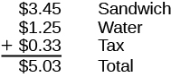
উল্লম্ব যোগ: উপরে স্যান্ডউইচের দাম $3.45, তার নীচে জলের দাম $1.25 এবং তার নীচে কর $0.33; যোগফল $5.03। ডলার ও সেন্টের দশমিক বিন্দুগুলি একই সরলরেখায় আছে।
তিনটি জিনিসেরই—স্যান্ডউইচ, জল ও কর—দাম ডলার ও সেন্টে দেওয়া ছিল। তাই ডলারের নীচে ডলার এবং সেন্টের নীচে সেন্ট রেখে দশমিক বিন্দুগুলি একই সরলরেখায় রেখেছিলাম। তারপর পূর্ণসংখ্যা যোগের মতো প্রতিটি স্তম্ভ যোগ করেছি। এভাবে দশমিক সংখ্যাগুলিকে সারিবদ্ধ করলে পূর্ণসংখ্যার মতো একই স্থানীয় মানের সংখ্যা যোগ বা বিয়োগ করা যায়।
অনুশীলন · এই প্রশ্নের লিঙ্ক
যোগ করো:
সমাধান
| সংখ্যাগুলিকে উল্লম্বভাবে লেখো, যাতে দশমিক বিন্দুগুলি একই সরলরেখায় থাকে। | |
| দুটি সংখ্যাতেই সমান সংখ্যক দশমিক ঘর আছে, তাই স্থানধারক শূন্যের দরকার নেই। | |
| সংখ্যাগুলিকে পূর্ণসংখ্যার মতো যোগ করো। তারপর প্রদত্ত সংখ্যাগুলির দশমিক বিন্দুর ঠিক নীচে উত্তরের দশমিক বিন্দু বসাও। |
অনুশীলন · এই প্রশ্নের লিঙ্ক
যোগ করো:
সমাধান
| সংখ্যাগুলিকে উল্লম্বভাবে লেখো, যাতে দশমিক বিন্দুগুলি একই সরলরেখায় থাকে। | 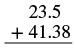 উল্লম্ব যোগে 23.5-এর নীচে 41.38 লেখা; দশমিক বিন্দুগুলি একই সরলরেখায় এবং নীচে যোগফল লেখার জন্য একটি অনুভূমিক রেখা। |
| 23.5-এর 5-এর পরে স্থানধারক হিসেবে 0 বসাও, যাতে দুটি সংখ্যাতেই দুইটি করে দশমিক ঘর থাকে। | 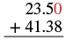 উল্লম্ব যোগে 23.50-এর নীচে 41.38; 23.50-এর শেষের স্থানধারক 0 লাল রঙে এবং দশমিক বিন্দুগুলি একই সরলরেখায়। |
| সংখ্যাগুলিকে পূর্ণসংখ্যার মতো যোগ করো। তারপর প্রদত্ত সংখ্যাগুলির দশমিক বিন্দুর ঠিক নীচে উত্তরের দশমিক বিন্দু বসাও। | 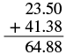 উল্লম্ব যোগে 23.50-এর নীচে 41.38 এবং ফল 64.88; দশমিক বিন্দুগুলি একই সরলরেখায়। |
ক্যাশিয়ারকে নোট দিয়ে মূল্যের জিনিস কিনলে কত টাকা ফেরত পাবে? পরের উদাহরণে হিসাবের ধাপগুলি দেখানো হল।
অনুশীলন · এই প্রশ্নের লিঙ্ক
বিয়োগ করো:
সমাধান
| সংখ্যাগুলিকে উল্লম্বভাবে লেখো, যাতে দশমিক বিন্দুগুলি একই সরলরেখায় থাকে। মনে রেখো, 20 একটি পূর্ণসংখ্যা; তাই 0-এর পরে দশমিক বিন্দু বসাও। | 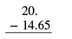 উল্লম্ব বিয়োগে 20.-এর নীচে 14.65; বাম দিকে বিয়োগচিহ্ন, দশমিক বিন্দুগুলি একই সরলরেখায় এবং নীচে অনুভূমিক রেখা। |
| 20-এর দশমিক বিন্দুর পরে স্থানধারক হিসেবে দুটি শূন্য বসাও, যাতে দুটি সংখ্যাতেই দুইটি করে দশমিক ঘর থাকে। | 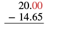 উল্লম্ব বিয়োগে 20.00-এর নীচে 14.65; 20.00-এর শেষের দুটি স্থানধারক শূন্য লাল রঙে। |
| সংখ্যাগুলিকে পূর্ণসংখ্যার মতো বিয়োগ করো। তারপর প্রদত্ত সংখ্যাগুলির দশমিক বিন্দুর ঠিক নীচে উত্তরের দশমিক বিন্দু বসাও। | 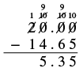 উল্লম্ব বিয়োগে 20.00−14.65=5.35; ধার নেওয়ার জন্য 2-কে কেটে 1, শূন্যগুলিকে কেটে 10 এবং পরের ধাপে 9 লেখা হয়েছে। |
অনুশীলন · এই প্রশ্নের লিঙ্ক
বিয়োগ করো:
সমাধান
| সংখ্যাগুলিকে উল্লম্বভাবে লেখো, যাতে দশমিক বিন্দুগুলি একই সরলরেখায় থাকে। | 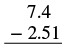 উল্লম্ব বিয়োগের জন্য 7.4-এর নীচে 2.51 লেখা; দশমিক বিন্দুগুলি একই সরলরেখায়। |
| 7.4-এর 4-এর পরে স্থানধারক হিসেবে 0 বসাও, যাতে দুটি সংখ্যাতেই দুইটি করে দশমিক ঘর থাকে। | 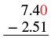 উল্লম্ব বিয়োগে 7.40-এর নীচে 2.51; 7.40-এর শেষের স্থানধারক 0 লাল রঙে। |
| বিয়োগ করো এবং উত্তরে দশমিক বিন্দু বসাও। | 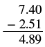 উল্লম্ব বিয়োগে 7.40−2.51=4.89। |
| মনে রেখো, মূলত আমরা করছি; তাই উত্তর ঋণাত্মক। |
দশমিক সংখ্যার গুণ
দশমিক সংখ্যার গুণ অনেকটাই অঋণাত্মক পূর্ণসংখ্যার গুণের মতো—শুধু কোথায় দশমিক বিন্দু বসবে তা নির্ণয় করতে হয়। আগে ভগ্নাংশের গুণ ঝালিয়ে নিলে দশমিক সংখ্যা গুণ করার পদ্ধতিটি বোঝা সহজ হবে।
ভগ্নাংশ কীভাবে গুণ করতে হয় মনে আছে? ভগ্নাংশ গুণ করতে প্রথমে লবগুলি গুণ করো, তারপর হরগুলি গুণ করো।
তাই প্রথমে দশমিক সংখ্যাগুলিকে ভগ্নাংশে রূপান্তর করে দেখি তাদের গুণফল কী হয়। সারণি [fs-id1620547]তে পাশাপাশি দুটি উদাহরণ করব। কোনো নিয়ম খুঁজে পাও কি না দেখো।
| A | B | |
| ভগ্নাংশে রূপান্তর করো। | ||
| গুণ করো। | ||
| আবার দশমিক সংখ্যায় রূপান্তর করো। |
এখানে কাজে লাগানোর মতো একটি নিয়ম আছে। A-তে এমন দুটি সংখ্যা গুণ করা হয়েছে, যাদের প্রত্যেকটিতে একটি করে দশমিক ঘর; গুণফলে দুটি দশমিক ঘর হয়েছে। B-তে একটি দশমিক ঘরবিশিষ্ট একটি সংখ্যাকে দুই দশমিক ঘরবিশিষ্ট আরেকটি সংখ্যা দিয়ে গুণ করা হয়েছে; গুণফলে তিনটি দশমিক ঘর হয়েছে।
এই গুণফলে কতটি দশমিক ঘর হবে বলে তোমার মনে হয়: যদি ‘পাঁচ’ বলে থাকো, তবে নিয়মটি ধরতে পেরেছ। দশমিক সংখ্যাযুক্ত দুটি গুণনীয়ককে গুণ করার সময় গুণনীয়কগুলির সব দশমিক ঘর গুনি—এখানে দুই যোগ তিন—তাহলেই গুণফলের দশমিক ঘরের সংখ্যা পাওয়া যায়—এখানে পাঁচ।
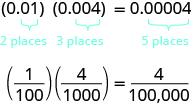
উপরের সারিতে 0.01 × 0.004 = 0.00004। 0.01-এর নীচে 2 ঘর, 0.004-এর নীচে 3 ঘর এবং 0.00004-এর নীচে 5 ঘর লেখা। নীচের সারিতে লব 1 ও হর 100-এর ভগ্নাংশকে লব 4 ও হর 1000-এর ভগ্নাংশ দিয়ে গুণ করে লব 4 ও হর 100,000-এর ভগ্নাংশ পাওয়া দেখানো হয়েছে।
দশমিক বিন্দুর পরে কতগুলি অঙ্ক থাকবে তা নির্ণয় করা জানা হয়ে গেলে, প্রথমে ভগ্নাংশে রূপান্তর না করেই দশমিক সংখ্যা গুণ করা যায়। গুণফলের দশমিক ঘরের সংখ্যা হবে গুণনীয়কগুলির দশমিক ঘরের সংখ্যার যোগফল।
ধনাত্মক ও ঋণাত্মক সংখ্যা গুণ করার নিয়মগুলি দশমিক সংখ্যার ক্ষেত্রেও অবশ্যই প্রযোজ্য।
চিহ্নযুক্ত দশমিক সংখ্যা গুণ করার সময় প্রথমে গুণফলের চিহ্ন নির্ণয় করো, তারপর সংখ্যাদুটির পরম মান গুণ করো। সবশেষে উপযুক্ত চিহ্নসহ গুণফলটি লেখো।
অনুশীলন · এই প্রশ্নের লিঙ্ক
গুণ করো:
সমাধান
| গুণফলের চিহ্ন নির্ণয় করো। চিহ্ন দুটি একই। | গুণফল ধনাত্মক হবে। |
| সংখ্যাগুলিকে উল্লম্বভাবে লেখো, ডান দিকের অঙ্কগুলি একই সরলরেখায় রাখো। | 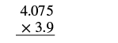 উল্লম্ব গুণের আকারে উপরে 4.075 এবং তার নীচে গুণচিহ্নসহ 3.9; হিসাব শুরুর জন্য নীচে একটি রেখা। |
| দশমিক বিন্দুগুলি সাময়িকভাবে উপেক্ষা করে সংখ্যাগুলিকে অঋণাত্মক পূর্ণসংখ্যার মতো গুণ করো। | 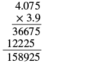 দশমিক বিন্দু সাময়িকভাবে উপেক্ষা করে উল্লম্ব গুণ: 4.075-এর নীচে 3.9; আংশিক গুণফল 36675 ও 12225 যোগ করে 158925 পাওয়া গেছে। চূড়ান্ত দশমিক বিন্দু এখনও বসানো হয়নি। |
| দশমিক বিন্দু বসাও। গুণনীয়কগুলির দশমিক ঘরের সংখ্যা যোগ করো ডান দিক থেকে 4 ঘর গুনে দশমিক বিন্দু বসাও। | 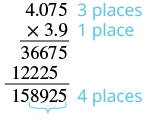 4.075-এ 3টি ও 3.9-এ 1টি দশমিক ঘর চিহ্নিত। তাই মোট 4টি ঘর গুনে 158925-এ ডান দিক থেকে দশমিক বিন্দু বসিয়ে 15.8925 পাওয়া হয়েছে। |
| গুণফল ধনাত্মক। |
অনুশীলন · এই প্রশ্নের লিঙ্ক
গুণ করো:
সমাধান
| চিহ্ন দুটি আলাদা। | গুণফল ঋণাত্মক হবে। |
| উল্লম্বভাবে লেখো, ডান দিকের অঙ্কগুলি একই সরলরেখায় রাখো। | |
| গুণ করো। | |
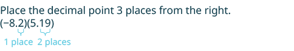 −8.2 ও 5.19-এর গুণফলে দশমিক বিন্দু ডান দিক থেকে 3 ঘর পরে বসাতে বলা হয়েছে; −8.2-এ 1টি এবং 5.19-এ 2টি দশমিক ঘর চিহ্নিত। |
|
| গুণফল ঋণাত্মক। |
পরের উদাহরণে দশমিক বিন্দু সঠিক জায়গায় বসানোর জন্য কয়েকটি স্থানধারক শূন্য যোগ করতে হবে।
অনুশীলন · এই প্রশ্নের লিঙ্ক
গুণ করো:
সমাধান
| গুণফল ধনাত্মক। | |
| উল্লম্বভাবে লেখো, ডান দিকের অঙ্কগুলি একই সরলরেখায় রাখো। | 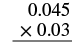 উল্লম্ব গুণের আকারে উপরে 0.045 এবং তার নীচে গুণচিহ্নসহ 0.03; হিসাবের জন্য নীচে রেখা। |
| গুণ করো। | 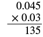 দশমিক বিন্দু সাময়িকভাবে উপেক্ষা করে 0.045 ও 0.03-এর উল্লম্ব গুণ; রেখার নীচে আংশিক ফল 135। |
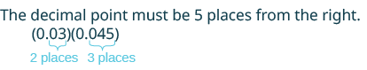 0.03-এ 2টি ও 0.045-এ 3টি দশমিক ঘর চিহ্নিত; তাই গুণফলের দশমিক বিন্দু ডান দিক থেকে মোট 5 ঘর পরে বসাতে হবে। পাঁচটি ঘর পূর্ণ করার জন্য দরকারমতো শূন্য যোগ করো। |
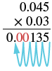 উল্লম্ব গুণে 0.045 × 0.03 = 0.00135। নীল তীরগুলি ডান দিক থেকে পাঁচটি দশমিক ঘর গোনা দেখায়; প্রয়োজনীয় স্থানধারক শূন্যগুলি লাল। |
| গুণফল ধনাত্মক। |
-এর ঘাত দিয়ে গুণ
বিজ্ঞানসহ বহু ক্ষেত্রে দশমিক সংখ্যাকে দশের ঘাত দিয়ে গুণ করা সাধারণ ব্যাপার; এই ঘাতগুলির ভিত্তি হল এবার -কে নীচে দেখানো দশের কয়েকটি ঘাত দিয়ে গুণ করলে কী ঘটে দেখি; এখানেও ভিত্তি
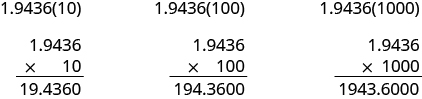
তিনটি উল্লম্ব গুণ পাশাপাশি: 1.9436 × 10 = 19.4360, 1.9436 × 100 = 194.3600 এবং 1.9436 × 1000 = 1943.6000।
শেষের শূন্যগুলি বাদ দিয়ে ফলগুলি দেখো। কোনো নিয়ম কি চোখে পড়ছে?
দশের ঘাতে যতগুলি শূন্য আছে, দশমিক বিন্দু ততগুলি ঘর সরেছে। ফলগুলি সারণি [fs-id3415452]তে সংক্ষেপে দেখানো হয়েছে।
| যে সংখ্যা দিয়ে গুণ করা হচ্ছে | শূন্যের সংখ্যা | দশমিক বিন্দু যত ঘর সরবে |
| ঘর ডান দিকে | ||
| ঘর ডান দিকে | ||
| ঘর ডান দিকে | ||
| ঘর ডান দিকে |
উল্লম্বভাবে গুণ না করে দশের ঘাত দিয়ে গুণ করার সংক্ষিপ্ত পদ্ধতি হিসেবে এই নিয়মটি ব্যবহার করা যায়। -এর ঘাতে যতগুলি শূন্য আছে তা গুনে দশমিক বিন্দুকে ডান দিকে ততগুলি ঘর সরাও। উৎস-সতর্কতা: মূল ইংরেজি বাক্যে ‘একই সংখ্যক ঘর’-এর ‘সংখ্যক’-সমতুল শব্দটি বাদ গেছে; এখানে একই সংখ্যক ঘরই বোঝানো হয়েছে।
উদাহরণ হিসেবে, -কে যে সংখ্যা দিয়ে গুণ করা হবে সেটি হল তাই দশমিক বিন্দুকে ঘর ডান দিকে সরাও।
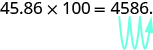
45.86 × 100 = 4586। নীল তীর দশমিক বিন্দুকে 2 ঘর ডান দিকে, অর্থাৎ 6-এর পরে সরানো দেখায়।
কখনও দশমিক বিন্দু সরাতে গিয়ে সংখ্যাটিতে যথেষ্ট দশমিক ঘর পাওয়া যায় না। তখন স্থানধারক হিসেবে শূন্য ব্যবহার করি। যেমন, -এর জন্য গুণনীয়ক হল দশমিক বিন্দুকে ঘর ডান দিকে সরাতে হবে। মূল সংখ্যাটির দশমিক বিন্দুর ডান দিকে মাত্র একটি অঙ্ক আছে বলে শতাংশের ঘরে একটি লিখতে হবে।
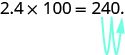
2.4 × 100 = 240। একটি স্থানধারক শূন্য যোগ করে নীল তীর দশমিক বিন্দুকে 2 ঘর ডান দিকে, অর্থাৎ নতুন 0-এর পরে সরানো দেখায়।
অনুশীলন · এই প্রশ্নের লিঙ্ক
-কে নীচের গুণনীয়কগুলি দিয়ে গুণ করো: ⓐ ⓑ ⓒ
সমাধান
দশের ঘাতটিতে যতগুলি শূন্য আছে তা দেখে বুঝি দশমিক বিন্দুকে কত ঘর ডান দিকে সরাতে হবে। উৎস-সতর্কতা: নীচের ⓐ-এর প্রথম রাশিতে ভুল করে 56.3(10) লেখা আছে। প্রশ্ন, তীরচিত্র এবং শেষ ফল 56.3 অনুযায়ী সেখানে 5.63(10) থাকা দরকার। রাশিটি উৎসের মতোই অপরিবর্তিত রাখা হয়েছে।
| ⓐ | |
| 10-এ 1টি শূন্য আছে, তাই দশমিক বিন্দুকে 1 ঘর ডান দিকে সরাও। | 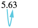 5.63 সংখ্যায় নীল তীর দশমিক বিন্দুকে 1 ঘর ডান দিকে, অর্থাৎ 6-এর পরে সরানো দেখায়। |
| ⓑ | |
| 100-তে 2টি শূন্য আছে, তাই দশমিক বিন্দুকে 2 ঘর ডান দিকে সরাও। | 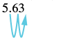 5.63 সংখ্যায় নীল তীর দশমিক বিন্দুকে 2 ঘর ডান দিকে, অর্থাৎ 3-এর পরে সরানো দেখায়। |
| ⓒ | |
| 1000-এ 3টি শূন্য আছে, তাই দশমিক বিন্দুকে 3 ঘর ডান দিকে সরাও। | 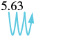 5.63 সংখ্যায় নীল তীর দশমিক বিন্দুকে 3 ঘর ডান দিকে সরানো দেখায়; 3-এর পরে নতুন স্থানধারক শূন্যের ঘরটি তৃতীয় ঘর। |
| শেষে একটি স্থানধারক শূন্য যোগ করতে হবে। |
দশমিক সংখ্যার ভাগ
গুণের মতোই দশমিক সংখ্যার ভাগও পূর্ণসংখ্যার ভাগের সঙ্গে অনেকটা মেলে। শুধু ঠিক করতে হবে, দশমিক বিন্দু কোথায় বসবে।
দশমিক সংখ্যার ভাগ বুঝতে এই গুণটি বিবেচনা করো—
মনে রাখো, একটি গুণের সমস্যাকে ভাগের সমস্যা হিসেবেও লেখা যায়। তাই লিখতে পারি—
এটিকে এভাবে ভাবা যায়: “8 দশাংশকে চারটি সমান দলে ভাগ করলে প্রতি দলে কত থাকবে?” চিত্র [CNX_BMath_Figure_05_02_001]-এ দেখা যাচ্ছে, 8 দশাংশে 2 দশাংশের চারটি দল আছে। তাই
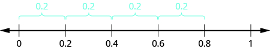
সংখ্যারেখায় 0, 0.2, 0.4, 0.6, 0.8 ও 1 চিহ্নিত। 0 থেকে 0.8 পর্যন্ত পাশাপাশি প্রতিটি দুই চিহ্নিত মানের মধ্যকার দূরত্বের উপরে একটি করে বন্ধনী আছে এবং প্রতিটির দৈর্ঘ্য 0.2 লেখা। ফলে 0.8-এর মধ্যে 0.2-এর চারটি সমান ব্যবধান দেখা যায়।
দীর্ঘ ভাগের চিহ্নে লিখলে হবে—
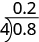
দীর্ঘ ভাগের বিন্যাসে ভাজ্য 0.8 ভাগচিহ্নের ভিতরে, অশূন্য ভাজক 4 বাঁ দিকে এবং ভাগফল 0.2 উপরে লেখা; অর্থাৎ 0.8 ভাগ 4 সমান 0.2।
লক্ষ করো, ভাগফলের দশমিক বিন্দুটি ভাজ্যের দশমিক বিন্দুর ঠিক উপরে বসেছে।
একটি দশমিক সংখ্যাকে একটি অশূন্য পূর্ণসংখ্যা দিয়ে ভাগ করতে ভাগফলের দশমিক বিন্দুটি ভাজ্যের দশমিক বিন্দুর ঠিক উপরে বসাও, তারপর স্বাভাবিক নিয়মে ভাগ করো। কখনও ভাগশেষ শূন্য না হওয়া পর্যন্ত ভাগ চালাতে ভাজ্যের শেষে অতিরিক্ত স্থানধারক শূন্য বসাতে হয়।
অনুশীলন · এই প্রশ্নের লিঙ্ক
ভাগ করো:
সমাধান
| দীর্ঘ ভাগের চিহ্নে লেখো। ভাগফলের দশমিক বিন্দুটি ভাজ্যের দশমিক বিন্দুর ঠিক উপরে বসাও। | 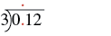 দীর্ঘ ভাগের বিন্যাসে ভাজ্য 0.12 ভাগচিহ্নের ভিতরে এবং অশূন্য ভাজক 3 বাঁ দিকে। 0.12-এর দশমিক বিন্দুর ঠিক উপরে ভাগফলের দশমিক স্থান দেখাতে একটি লাল বিন্দু আছে; উৎসের ইংরেজি বিবরণের মতো প্রথম 1-এর উপরে নয়। |
| স্বাভাবিক নিয়মে ভাগ করো। 3 দিয়ে 0 বা 1 ভাগ করলে পূর্ণসংখ্যা ভাগফল পাওয়া যায় না, তাই ভাগফলে স্থানধারক শূন্য বসাও। | 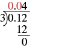 0.12-কে 3 দিয়ে দীর্ঘ ভাগ: উপরে ভাগফল 0.04; নীচে 12 থেকে 12 বিয়োগ করে ভাগশেষ 0। ভাগফলের দুটি স্থানধারক শূন্য লাল রঙে। |
দৈনন্দিন জীবনে একটি জিনিসের দাম বার করতে আমরা কোনো পূর্ণসংখ্যক জিনিসের মোট দশমিক-মুদ্রামূল্যকে সেই সংখ্যা দিয়ে ভাগ করি। যেমন, ধরো টি জলের বোতলের একটি বাক্সের মোট দাম প্রতি বোতলের দাম বার করার ভাগে মোট মূল্য এবং বোতলের সংখ্যা যথাক্রমে ভাজ্য ও ভাজক; তাই ভাগফলকে নিকটতম সেন্ট, অর্থাৎ শতাংশের ঘর, পর্যন্ত আসন্নমান নিতে হবে।
অনুশীলন · এই প্রশ্নের লিঙ্ক
ভাগ করো:
সমাধান
| ভাগফলের দশমিক বিন্দুটি ভাজ্যের দশমিক বিন্দুর ঠিক উপরে বসাও। | 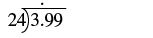 দীর্ঘ ভাগের বিন্যাসে ভাজ্য 3.99 ভাগচিহ্নের ভিতরে এবং অশূন্য ভাজক 24 বাঁ দিকে। 3.99-এর দশমিক বিন্দুর ঠিক উপরে ভাগফলের দশমিক স্থান দেখাতে একটি বিন্দু আছে; উৎসের ইংরেজি বিবরণের মতো 3-এর উপরে নয়। |
| স্বাভাবিক নিয়মে ভাগ করো। কখন থামবে? এখানে মুদ্রার হিসাব বলে নিকটতম সেন্ট, অর্থাৎ শতাংশের ঘর, পর্যন্ত আসন্নমান চাই। তাই ভাগকে সহস্রাংশের ঘর পর্যন্ত চালাতে হবে। | 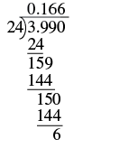 3.990-কে 24 দিয়ে দীর্ঘ ভাগ করে উপরে ভাগফল 0.166 পাওয়া হয়েছে; ধাপগুলিতে 3.990, 24, 159, 144, 150 ও 144 আছে এবং শেষ ভাগশেষ 6। |
| নিকটতম সেন্ট পর্যন্ত আসন্নমান নির্ণয় করো। | |
অর্থাৎ প্রতি বোতলের দাম সেন্ট।
একটি দশমিক সংখ্যাকে আর-একটি অশূন্য দশমিক সংখ্যা দিয়ে ভাগ
এ পর্যন্ত আমরা একটি দশমিক সংখ্যাকে একটি অশূন্য পূর্ণসংখ্যা দিয়ে ভাগ করেছি। একটি দশমিক সংখ্যাকে আর-একটি অশূন্য দশমিক সংখ্যা দিয়ে ভাগ করলে কী হয়? আগে দেখা একই গুণটিকে এবার অন্যভাবে দেখি।
আবার মনে রাখো, একটি গুণের সমস্যাকে ভাগের সমস্যা হিসেবেও লেখা যায়। এবার প্রশ্ন করি, “-এর কতটি মিলে যেহেতু তাই বলা যায়, সংখ্যাটি সংখ্যার মধ্যে চারবার যায়। অর্থাৎ সংখ্যাকে দিয়ে ভাগ করলে ভাগফল
সংখ্যারেখায় 0, 0.2, 0.4, 0.6, 0.8 ও 1 চিহ্নিত। 0 থেকে 0.8 পর্যন্ত পাশাপাশি প্রতিটি দুই চিহ্নিত মানের মধ্যকার দূরত্বের উপরে একটি করে বন্ধনী আছে এবং প্রতিটির দৈর্ঘ্য 0.2 লেখা। ফলে 0.8-এর মধ্যে 0.2-এর চারটি সমান ব্যবধান দেখা যায়।
পূর্ণসংখ্যা দিয়ে হিসাব করলে উত্তরও হয় কারণ এখানে ভাজ্য পূর্ণসংখ্যা এবং ভাজক পূর্ণসংখ্যা তাই ভাগটি একই থাকে। কেন? ভাগের সমস্যাটিকে একটি ভগ্নাংশ হিসেবে ভাবো।
ভগ্নাংশ-রূপে লব, অর্থাৎ ভাজ্য, এবং অশূন্য হর, অর্থাৎ ভাজক—দুটিকেই দিয়ে গুণ করলে নতুন ভাজ্য হয় এবং নতুন ভাজক হয় দশমিক সংখ্যার ভাগে ভাজক অবশ্যই অশূন্য। ভাজককে পূর্ণসংখ্যা করতে লব ও অশূন্য হর—অর্থাৎ ভাজ্য ও ভাজক—দুটিকেই -এর একই ঘাত দিয়ে গুণ করি। সমতুল ভগ্নাংশের ধর্ম অনুযায়ী এতে ভগ্নাংশের মান বদলায় না। ফলে ভাজ্য ও ভাজক—দুটির দশমিক বিন্দুই সমান সংখ্যক ঘর ডান দিকে সরে।
ধনাত্মক ও ঋণাত্মক দশমিক সংখ্যার ভাগেও চিহ্নের নিয়ম প্রযোজ্য। অশূন্য ভাজক দিয়ে চিহ্নযুক্ত দশমিক সংখ্যা ভাগ করার সময় প্রথমে ভাগফলের চিহ্ন নির্ণয় করো। তারপর সংখ্যাদুটিকে ধনাত্মক ধরে ভাগ করো। শেষে ভাগফলের সঙ্গে ঠিক চিহ্নটি লেখো।
ভাগের পরিভাষাগুলি আবার দেখে নিলে সুবিধা হতে পারে:
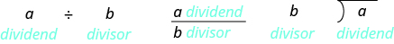
ভাগের তিনটি সমতুল বিন্যাসে a হল ভাজ্য ও b হল অশূন্য ভাজক: প্রথমে a ÷ b; তারপর লব a ও হর b-সহ ভগ্নাংশ a/b; শেষে দীর্ঘ ভাগে b বাঁ দিকে এবং a ভাগচিহ্নের ভিতরে। মাঝের ছবির উৎস-বিবরণে ভুল ক্রিয়াপদ আছে; দৃশ্যমান লেবেল অনুযায়ী a হল ভাজ্য।
অনুশীলন · এই প্রশ্নের লিঙ্ক
ভাগ করো:
সমাধান
| ভাগফলের চিহ্ন নির্ণয় করো। | ভাগফল ঋণাত্মক হবে। |
| অশূন্য ভাজকের দশমিক বিন্দুটি একেবারে ডান দিকে এক ঘর সরিয়ে তাকে পূর্ণসংখ্যা করো। ভাজ্যের দশমিক বিন্দুটিও এক ঘর ডান দিকে সরাও। | 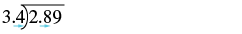 দীর্ঘ ভাগের বিন্যাসে ভাজ্য 2.89 ভিতরে ও অশূন্য ভাজক 3.4 বাঁ দিকে। নীল তিরচিহ্ন দুটি উভয় দশমিক বিন্দু এক ঘর ডান দিকে সরিয়ে 28.9-কে 34 দিয়ে ভাগ করার প্রস্তুতি দেখায়। |
| ভাগ করো। ভাগফলের দশমিক বিন্দুটি ভাজ্যের দশমিক বিন্দুর ঠিক উপরে বসাও। ভাগশেষ শূন্য না হওয়া পর্যন্ত প্রয়োজনমতো শূন্য যোগ করো। | 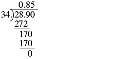 28.90-কে 34 দিয়ে দীর্ঘ ভাগ করে ভাগফল 0.85 পাওয়া হয়েছে। ধাপগুলিতে 28.90 থেকে 272 বিয়োগ, তারপর 170 থেকে 170 বিয়োগ করে শেষ ভাগশেষ 0। |
| ভাগফলের সঙ্গে উপযুক্ত চিহ্নটি লেখো। |
অনুশীলন · এই প্রশ্নের লিঙ্ক
ভাগ করো:
সমাধান
| চিহ্নদুটি একই। | ভাগফল ধনাত্মক হবে। |
| অশূন্য ভাজকের দশমিক বিন্দুটি একেবারে ডান দিকে দুই ঘর সরিয়ে তাকে পূর্ণসংখ্যা করো। ভাজ্যের দশমিক বিন্দুটিও একইভাবে দুই ঘর সরাও। |
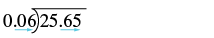 দীর্ঘ ভাগে ভাজ্য 25.65 ভিতরে ও অশূন্য ভাজক 0.06 বাঁ দিকে। নীল তিরচিহ্ন দুটি ভাজ্য ও ভাজক—উভয়ের দশমিক বিন্দু দুই ঘর ডান দিকে সরানোর নির্দেশ করে। |
| ভাগ করো। ভাগফলের দশমিক বিন্দুটি ভাজ্যের দশমিক বিন্দুর ঠিক উপরে বসাও। |
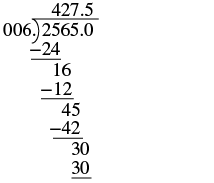 দীর্ঘ ভাগে প্রদর্শিত 006-এর মান 6 এবং ভাজ্য 2565.0; উপরে ভাগফল 427.5। ধাপগুলিতে 24, 16 থেকে 12, 45 থেকে 42 এবং 30 থেকে 30 বিয়োগ করে ভাগশেষ 0। |
| ভাগফলের সঙ্গে উপযুক্ত চিহ্নটি লেখো। |
এবার একটি পূর্ণসংখ্যাকে একটি অশূন্য দশমিক সংখ্যা দিয়ে ভাগ করা হবে।
অনুশীলন · এই প্রশ্নের লিঙ্ক
ভাগ করো:
সমাধান
| চিহ্নদুটি একই। | ভাগফল ধনাত্মক হবে। |
| অশূন্য ভাজকের দশমিক বিন্দুটি একেবারে ডান দিকে দুই ঘর সরিয়ে তাকে পূর্ণসংখ্যা করো। ভাজ্যের দশমিক বিন্দুটিও একই সংখ্যক ঘর সরাও; প্রয়োজনে শূন্য যোগ করো। |
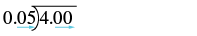 দীর্ঘ ভাগে ভাজ্য 4.00 ভিতরে ও অশূন্য ভাজক 0.05 বাঁ দিকে। নীল তিরচিহ্ন দুটি উভয় দশমিক বিন্দু দুই ঘর ডান দিকে সরিয়ে 400-কে 5 দিয়ে ভাগ করার প্রস্তুতি দেখায়। |
| ভাগ করো। ভাগফলের দশমিক বিন্দুটি ভাজ্যের দশমিক বিন্দুর ঠিক উপরে বসাও। |
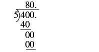 400-কে 5 দিয়ে দীর্ঘ ভাগ করে ভাগফল 80 পাওয়া হয়েছে। ধাপে 40-কে 5 দিয়ে ভাগ করে 8, তারপর শূন্য নামিয়ে শেষ ভাগশেষ 0 দেখানো হয়েছে। |
| ভাগফলের সঙ্গে উপযুক্ত চিহ্নটি লেখো। |
এই উদাহরণটিকে মার্কিন মুদ্রার সঙ্গে মেলানো যায়। চার ডলারে পাঁচ সেন্টের কয়টি নিকেল মুদ্রা থাকে? যেহেতু তাই পাঁচ সেন্টের নিকেলের সংখ্যা এবং তাদের মোট মূল্য
অর্থসংক্রান্ত প্রয়োগে দশমিক সংখ্যা ব্যবহার
বাস্তব জীবনে আমরা প্রায়ই দশমিক সংখ্যা ব্যবহার করি; এর অনেক প্রয়োগ অর্থসংক্রান্ত। বীজগণিতের ভাষা পাঠে ব্যবহৃত প্রয়োগের কৌশলটি উত্তর খোঁজার একটি পরিকল্পনা দেয়। এখন কৌশলটি আরেকবার দেখে নাও।
অনুশীলন · এই প্রশ্নের লিঙ্ক
পল জন্মদিনে পেয়েছিল। একটি ভিডিও গেমে সে খরচ করল। পলের জন্মদিনের টাকা কত বাকি রইল?
সমাধান
| কী নির্ণয় করতে বলা হয়েছে? | পলের কত টাকা বাকি রইল? |
| একটি বাক্যাংশ লেখো। | $50 থেকে $31.64 বিয়োগ |
| রাশিতে রূপান্তর করো। | |
| সরল করো। | 18.36 |
| একটি বাক্য লেখো। | পলের $18.36 বাকি আছে। |
অনুশীলন · এই প্রশ্নের লিঙ্ক
জেসি তার গাড়িতে গ্যালন গ্যাস ভরল। প্রতি গ্যালন গ্যাসের দাম গ্যাসের জন্য জেসিকে কত দিতে হবে? উত্তরটি নিকটতম সেন্ট পর্যন্ত আসন্নমান হিসেবে লেখো।
সমাধান
| কী নির্ণয় করতে বলা হয়েছে? | সব গ্যাসের জন্য জেসিকে কত দিতে হবে? |
| একটি বাক্যাংশ লেখো। | প্রতি গ্যালন গ্যাসের দামের 8 গুণ |
| রাশিতে রূপান্তর করো। | |
| সরল করো। | $28.232 |
| নিকটতম সেন্ট পর্যন্ত আসন্নমান নির্ণয় করো। | $28.23 |
| একটি বাক্য লেখো। | গ্যাসের জন্য জেসিকে $28.23 দিতে হবে। |
অনুশীলন · এই প্রশ্নের লিঙ্ক
চার বন্ধু বাইরে রাতের খাবার খেতে গেল। তারা একটি বড় পিৎজা ও এক জগ সোডা ভাগ করে নিল। তাদের খাবারের মোট দাম ছিল দামটি সমানভাবে ভাগ করলে প্রত্যেক বন্ধুকে কত দিতে হবে?
সমাধান
| কী নির্ণয় করতে বলা হয়েছে? | প্রত্যেক বন্ধুকে কত দিতে হবে? |
| একটি বাক্যাংশ লেখো। | চার বন্ধুর মধ্যে $31.76 সমানভাবে ভাগ |
| একটি রাশিতে রূপান্তর করো। | |
| সরল করো। | $7.94 |
| একটি বাক্য লেখো। | রাতের খাবারের নিজের অংশের জন্য প্রত্যেক বন্ধুকে $7.94 দিতে হবে। |
পরের উদাহরণে ক্রিয়ার ক্রম মেনে চলতে সাবধান হও। মনে রেখো, যোগের আগে গুণ করতে হবে।
অনুশীলন · এই প্রশ্নের লিঙ্ক
মার্লা টি কলা কিনল, প্রতিটির দাম ; আর টি কমলালেবু কিনল, প্রতিটির দাম । ফলগুলির মোট দাম কত?
সমাধান
| কী নির্ণয় করতে বলা হয়েছে? | ফলগুলির মোট দাম কত? |
| একটি বাক্যাংশ লেখো। | প্রতিটি কলার দামের 6 গুণের সঙ্গে প্রতিটি কমলালেবুর দামের 4 গুণ যোগ |
| একটি রাশিতে রূপান্তর করো। | |
| সরল করো। | |
| যোগ করো। | $3.28 |
| একটি বাক্য লেখো। | ফলগুলির জন্য মার্লার মোট খরচ $3.28। |
মূল ধারণা
- দশমিক সংখ্যা যোগ বা বিয়োগ করো।
- সংখ্যাগুলিকে উল্লম্বভাবে লেখো, যাতে দশমিক বিন্দুগুলি একই সরলরেখায় থাকে।
- দরকার হলে স্থানধারক হিসেবে শূন্য ব্যবহার করো।
- সংখ্যাগুলিকে পূর্ণসংখ্যার মতো যোগ বা বিয়োগ করো। তারপর প্রদত্ত সংখ্যাগুলির দশমিক বিন্দুর ঠিক নীচে উত্তরের দশমিক বিন্দু বসাও।
- দশমিক সংখ্যা গুণ করো।
- গুণফলের চিহ্ন নির্ণয় করো।
- সংখ্যাগুলিকে উল্লম্বভাবে লেখো, ডান দিকের অঙ্কগুলি একই সরলরেখায় রাখো।
- দশমিক বিন্দুগুলি সাময়িকভাবে উপেক্ষা করে সংখ্যাগুলিকে পূর্ণসংখ্যার মতো গুণ করো।
- দশমিক বিন্দু বসাও। গুণফলে দশমিক ঘরের সংখ্যা হবে গুণনীয়কগুলির দশমিক ঘরের সংখ্যার যোগফল। দরকার হলে স্থানধারক শূন্য ব্যবহার করো।
- উপযুক্ত চিহ্নসহ গুণফলটি লেখো।
- দশের একটি ঘাত দিয়ে দশমিক সংখ্যাকে গুণ করো।
- দশের ঘাতটিতে যতগুলি শূন্য আছে, দশমিক বিন্দুকে ততগুলি ঘর ডান দিকে সরাও।
- দরকার হলে স্থানধারক হিসেবে সংখ্যাটির শেষে শূন্য লেখো।
- শূন্য নয় এমন পূর্ণসংখ্যা দিয়ে দশমিক সংখ্যাকে ভাগ করো।
- দীর্ঘ ভাগের আকারে লেখো; ভাজ্যের দশমিক বিন্দুর ঠিক উপরে ভাগফলের দশমিক বিন্দু বসাও।
- স্বাভাবিক নিয়মে ভাগ করো।
- একটি দশমিক সংখ্যাকে শূন্য নয় এমন দশমিক সংখ্যা দিয়ে ভাগ করো।
- ভাগফলের চিহ্ন নির্ণয় করো।
- ভাজকের দশমিক বিন্দুকে একেবারে ডান দিকে সরিয়ে সেটিকে পূর্ণসংখ্যা বানাও। ভাজ্যের দশমিক বিন্দুকেও একই সংখ্যক ঘর ডান দিকে সরাও; দরকার হলে শূন্য লেখো।
- ভাগ করো। ভাজ্যের দশমিক বিন্দুর ঠিক উপরে ভাগফলের দশমিক বিন্দু বসাও।
- উপযুক্ত চিহ্নসহ ভাগফলটি লেখো।
- প্রয়োগের কৌশল
- কী নির্ণয় করতে বলা হয়েছে, তা চিহ্নিত করো।
- সেটি নির্ণয়ের জন্য প্রয়োজনীয় তথ্য দিয়ে একটি বাক্যাংশ লেখো।
- বাক্যাংশটিকে একটি রাশিতে রূপান্তর করো।
- রাশিটি সরল করো।
- একটি সম্পূর্ণ বাক্যে প্রশ্নটির উত্তর লেখো।
অনুশীলনে দক্ষতা বাড়ে
দশমিক সংখ্যার যোগ ও বিয়োগ
নীচের অনুশীলনীগুলিতে যোগ বা বিয়োগ করো।
অনুশীলন · এই প্রশ্নের লিঙ্ক
অনুশীলন · এই প্রশ্নের লিঙ্ক
অনুশীলন · এই প্রশ্নের লিঙ্ক
অনুশীলন · এই প্রশ্নের লিঙ্ক
অনুশীলন · এই প্রশ্নের লিঙ্ক
অনুশীলন · এই প্রশ্নের লিঙ্ক
অনুশীলন · এই প্রশ্নের লিঙ্ক
অনুশীলন · এই প্রশ্নের লিঙ্ক
অনুশীলন · এই প্রশ্নের লিঙ্ক
অনুশীলন · এই প্রশ্নের লিঙ্ক
অনুশীলন · এই প্রশ্নের লিঙ্ক
অনুশীলন · এই প্রশ্নের লিঙ্ক
অনুশীলন · এই প্রশ্নের লিঙ্ক
অনুশীলন · এই প্রশ্নের লিঙ্ক
দশমিক সংখ্যার গুণ
নীচের অনুশীলনীগুলিতে গুণ করো।
অনুশীলন · এই প্রশ্নের লিঙ্ক
অনুশীলন · এই প্রশ্নের লিঙ্ক
অনুশীলন · এই প্রশ্নের লিঙ্ক
অনুশীলন · এই প্রশ্নের লিঙ্ক
অনুশীলন · এই প্রশ্নের লিঙ্ক
অনুশীলন · এই প্রশ্নের লিঙ্ক
অনুশীলন · এই প্রশ্নের লিঙ্ক
অনুশীলন · এই প্রশ্নের লিঙ্ক
অনুশীলন · এই প্রশ্নের লিঙ্ক
অনুশীলন · এই প্রশ্নের লিঙ্ক
দশমিক সংখ্যার ভাগ
নীচের অনুশীলনীগুলিতে ভাগ করো। টাকার যে ফল সেন্টের ভগ্নাংশ পর্যন্ত যায়, উৎসের প্রদত্ত উত্তরে তার নিকটতম সেন্টের আসন্ন মান লেখা হয়েছে।
অনুশীলন · এই প্রশ্নের লিঙ্ক
অনুশীলন · এই প্রশ্নের লিঙ্ক
অনুশীলন · এই প্রশ্নের লিঙ্ক
অনুশীলন · এই প্রশ্নের লিঙ্ক
অনুশীলন · এই প্রশ্নের লিঙ্ক
অনুশীলন · এই প্রশ্নের লিঙ্ক
অনুশীলন · এই প্রশ্নের লিঙ্ক
অনুশীলন · এই প্রশ্নের লিঙ্ক
অনুশীলন · এই প্রশ্নের লিঙ্ক
অনুশীলন · এই প্রশ্নের লিঙ্ক
সমন্বিত অনুশীলন
নীচের অনুশীলনীগুলিতে সরল করো।
অনুশীলন · এই প্রশ্নের লিঙ্ক
অনুশীলন · এই প্রশ্নের লিঙ্ক
অনুশীলন · এই প্রশ্নের লিঙ্ক
অনুশীলন · এই প্রশ্নের লিঙ্ক
অনুশীলন · এই প্রশ্নের লিঙ্ক
অনুশীলন · এই প্রশ্নের লিঙ্ক
অনুশীলন · এই প্রশ্নের লিঙ্ক
টাকা-পয়সার প্রয়োগে দশমিক সংখ্যার ব্যবহার
নীচের অনুশীলনীগুলি সমাধান করতে প্রয়োগভিত্তিক সমস্যার কৌশল ব্যবহার করো। টাকা-পয়সার প্রশ্নগুলিতে মূল বইয়ের মার্কিন ডলার ও $ চিহ্ন অপরিবর্তিত রাখা হয়েছে।
অনুশীলন · এই প্রশ্নের লিঙ্ক
খরচের টাকা — ব্রেন্ডা এটিএম থেকে তুলল। সে এক জোড়া কানের দুল কিনতে খরচ করল। তার কাছে কত টাকা বাকি রইল?
উৎসে প্রদত্ত উত্তর
$24.89
অনুশীলন · এই প্রশ্নের লিঙ্ক
খরচের টাকা — মারিসা তার পকেটে পেল। সে একটি স্মুদি কিনতে খরচ করল। -এর মধ্যে তার কাছে কত টাকা বাকি রইল?
অনুশীলন · এই প্রশ্নের লিঙ্ক
কেনাকাটা — অ্যাডাম দিয়ে একটি টি-শার্ট এবং দিয়ে একটি বই কিনল। বিক্রয়কর ছিল অ্যাডাম মোট কত খরচ করল?
উৎসে প্রদত্ত উত্তর
$29.06
অনুশীলন · এই প্রশ্নের লিঙ্ক
রেস্তোরাঁ — রবার্তোর রেস্তোরাঁর বিলে প্রধান খাবারের দাম ছিল এবং পানীয়ের দাম ছিল । সে বকশিশ দিল। রবার্তো মোট কত খরচ করল?
অনুশীলন · এই প্রশ্নের লিঙ্ক
কুপন — এমিলি এক বাক্স সিরিয়াল কিনল, যার দাম ছিল তার কাছে ছাড়ের একটি কুপন ছিল এবং দোকানটি কুপনের ছাড়ের সমান আর-একটি ছাড় দিল। সিরিয়ালের বাক্সটির জন্য সে কত দিল?
উৎসে প্রদত্ত উত্তর
$3.19
অনুশীলন · এই প্রশ্নের লিঙ্ক
কুপন — ডায়ানা এক কৌটো কফি কিনল, যার দাম ছিল তার কাছে ছাড়ের একটি কুপন ছিল এবং দোকানটি কুপনের ছাড়ের সমান আর-একটি ছাড় দিল। কফির কৌটোটির জন্য সে কত দিল?
অনুশীলন · এই প্রশ্নের লিঙ্ক
খাদ্যনিয়ন্ত্রণ — লিও একটি খাদ্যনিয়ন্ত্রণ কর্মসূচিতে অংশ নিল। কর্মসূচির শুরুতে তার ওজন ছিল পাউন্ড। প্রথম সপ্তাহে তার ওজন পাউন্ড কমল। দ্বিতীয় সপ্তাহে তার ওজন আরও পাউন্ড কমেছিল। তৃতীয় সপ্তাহে তার ওজন পাউন্ড বাড়ল। চতুর্থ সপ্তাহে তার ওজন পাউন্ড কমল। চতুর্থ সপ্তাহের শেষে লিওর ওজন কত ছিল?
উৎসে প্রদত্ত উত্তর
181.7 পাউন্ড
অনুশীলন · এই প্রশ্নের লিঙ্ক
জমা বরফ — এপ্রিলের স্কি-কেন্দ্রে জমা বরফের গভীরতা ছিল মিটার, কিন্তু পরের কয়েকটি দিন খুব গরম ছিল। এপ্রিলের বরফের গভীরতা মিটার কমে গেল। এপ্রিলের তুষারপাত হয়ে আরও মিটার বরফ জমল। তখন বরফের মোট গভীরতা কত ছিল?
অনুশীলন · এই প্রশ্নের লিঙ্ক
কফি — নোরিকো নিজের ও সহকর্মীদের জন্য টি কফি কিনল। প্রতিটি কফির দাম ছিল সব কটি কফির জন্য সে মোট কত দিল?
উৎসে প্রদত্ত উত্তর
$15.00
অনুশীলন · এই প্রশ্নের লিঙ্ক
পাতালরেলের ভাড়া — আরিয়ানার প্রতিদিন পাতালরেলের ভাড়া লাগে । গত সপ্তাহে সে দিন পাতালরেলে যাতায়াত করেছিল। পাতালরেলের ভাড়া বাবদ সে মোট কত খরচ করেছিল?
অনুশীলন · এই প্রশ্নের লিঙ্ক
আয় — মাইরা ঘণ্টায় আয় করে। গত সপ্তাহে সে ঘণ্টা কাজ করেছিল। সে কত আয় করেছিল?
উৎসে প্রদত্ত উত্তর
$296.00
অনুশীলন · এই প্রশ্নের লিঙ্ক
আয় — পিটার ঘণ্টায় আয় করে। গত সপ্তাহে সে ঘণ্টা কাজ করেছিল। সে কত আয় করেছিল?
অনুশীলন · এই প্রশ্নের লিঙ্ক
ঘণ্টাপ্রতি মজুরি — অ্যালান তার নতুন চাকরির প্রথম বেতন পেল। সে ঘণ্টা কাজ করে মোট আয় করেছে সে ঘণ্টায় কত আয় করে?
উৎসে প্রদত্ত উত্তর
$12.75
অনুশীলন · এই প্রশ্নের লিঙ্ক
ঘণ্টাপ্রতি মজুরি — মারিয়া তার নতুন চাকরির প্রথম বেতন পেল। সে ঘণ্টা কাজ করে মোট আয় করেছে সে ঘণ্টায় কত আয় করে?
অনুশীলন · এই প্রশ্নের লিঙ্ক
রেস্তোরাঁ — জেনেট ও তার বন্ধুরা তাদের প্রিয় রেস্তোরাঁয় মাড পাই অর্ডার করতে ভালোবাসে। তারা একটি পাইয়ের টুকরোই নিজেদের মধ্যে ভাগ করে নেয়। কর ও বকশিশসহ মোট দাম মাড পাইটি ভাগ করে নেওয়া মেয়ের মোট সংখ্যা নীচের প্রতিটি সংখ্যা হলে, প্রত্যেকে কত দেবে?
ⓐ
ⓑ
ⓒ
ⓓ
ⓔ
উৎসে প্রদত্ত উত্তর
- ⓐ $3
- ⓑ $2
- ⓒ $1.50
- ⓓ $1.20
- ⓔ $1
অনুশীলন · এই প্রশ্নের লিঙ্ক
পিৎজা — অ্যালেক্স ও তার বন্ধুরা সপ্তাহে একবার পিৎজা খেতে এবং ভিডিও গেম খেলতে বাইরে যায়। তারা দামের একটি পিৎজার খরচ সমানভাবে ভাগ করে নেয়। পিৎজাটি ভাগ করে নেওয়া লোকের মোট সংখ্যা নীচের প্রতিটি সংখ্যা হলে, প্রত্যেকে কত দেবে?
ⓐ
ⓑ
ⓒ
ⓓ
ⓔ
অনুশীলন · এই প্রশ্নের লিঙ্ক
ফাস্ট ফুড — কার্লসন পরিবার তাদের প্রিয় ফাস্ট ফুড রেস্তোরাঁয় টি বার্গার অর্ডার করল, প্রতিটির দাম ; আর টি ফ্রেঞ্চ ফ্রাই অর্ডার করল, প্রতিটির দাম । অর্ডারটির মোট দাম কত?
উৎসে প্রদত্ত উত্তর
$18.64
অনুশীলন · এই প্রশ্নের লিঙ্ক
গৃহস্থালির জিনিস — কলেজে নিয়ে যাওয়ার জন্য চেলসির তোয়ালে দরকার। সে টি স্নানের তোয়ালে কিনল, প্রতিটির দাম ; আর টি মুখ মোছার কাপড় কিনল, প্রতিটির দাম । স্নানের তোয়ালে ও মুখ মোছার কাপড়গুলির মোট দাম কত?
অনুশীলন · এই প্রশ্নের লিঙ্ক
চিড়িয়াখানা — লুইস ও চাউস্মিথ পরিবার একসঙ্গে চিড়িয়াখানায় যাওয়ার পরিকল্পনা করছে। প্রাপ্তবয়স্কদের টিকিটের দাম এবং শিশুদের টিকিটের দাম জন প্রাপ্তবয়স্ক ও জন শিশুর জন্য মোট খরচ কত হবে?
উৎসে প্রদত্ত উত্তর
$259.45
অনুশীলন · এই প্রশ্নের লিঙ্ক
আইস স্কেটিং — জ্যাসমিন স্থানীয় আইস স্কেটিং রিঙ্কে তার জন্মদিনের অনুষ্ঠান করতে চায়। প্রত্যেক শিশুর জন্য খরচ হবে এবং প্রত্যেক প্রাপ্তবয়স্কের জন্য । জন শিশু ও জন প্রাপ্তবয়স্কের জন্য মোট খরচ কত হবে?
রোজকার জীবনে গণিত
অনুশীলন · এই প্রশ্নের লিঙ্ক
বেতন — অ্যানির দুটি চাকরি আছে। সিটি কলেজে পড়ানোর জন্য সে ঘণ্টায় এবং একটি কফির দোকানে কাজের জন্য ঘণ্টায় পায়। গত সপ্তাহে সে ঘণ্টা পড়িয়েছিল এবং কফির দোকানে ঘণ্টা কাজ করেছিল।
ⓐ সে মোট কত আয় করেছিল?
ⓑ দুটি চাকরিতে কাজ না করে সে যদি ঘণ্টাই পড়াত, তবে কত বেশি আয় করত?
উৎসে প্রদত্ত উত্তর
- ⓐ $243.57
- ⓑ $79.35
অনুশীলন · এই প্রশ্নের লিঙ্ক
বেতন — জেকের দুটি চাকরি আছে। কলেজের ক্যাফেটেরিয়ায় সে ঘণ্টায় এবং শিল্পকলা প্রদর্শনশালায় ঘণ্টায় পায়। গত সপ্তাহে সে ক্যাফেটেরিয়ায় ঘণ্টা এবং শিল্পকলা প্রদর্শনশালায় ঘণ্টা কাজ করেছিল।
ⓐ সে মোট কত আয় করেছিল?
ⓑ দুটি চাকরিতে কাজ না করে সে যদি ঘণ্টাই শিল্পকলা প্রদর্শনশালায় কাজ করত, তবে কত বেশি আয় করত?
লিখে প্রকাশ করো
অনুশীলন · এই প্রশ্নের লিঙ্ক
2010 সালের শীতকালীন অলিম্পিকে পুরুষদের সুপার-জি স্কি প্রতিযোগিতায় দুই স্কিয়ার রুপো ও ব্রোঞ্জ পদক জিতেছিলেন। মিলারের সময় ছিল মিনিট সেকেন্ড এবং ওয়াইব্রেখটের সময় ছিল মিনিট সেকেন্ড। তাঁদের সময়ের পার্থক্য নির্ণয় করো, তারপর সেই দশমিক সংখ্যাটি কথায় লেখো।
উৎসে প্রদত্ত উত্তর
পার্থক্য: 0.03 সেকেন্ড। এক সেকেন্ডের তিন শতাংশ, অর্থাৎ একশো সমান ভাগের তিন ভাগ।
অনুশীলন · এই প্রশ্নের লিঙ্ক
-এর ভাগফল নির্ণয় করো এবং প্রতিটি ধাপ কথায় ব্যাখ্যা করো।
নিজের শেখা যাচাই করো
ⓐ অনুশীলনীগুলি শেষ করার পরে, এই পাঠের শেখার উদ্দেশ্যগুলি কতটা আয়ত্ত করেছ, তা যাচাই করতে এই তালিকাটি ব্যবহার করো।

দশমিক-দক্ষতার স্ব-মূল্যায়ন সারণি। চারটি স্তম্ভ: ‘আমি পারি…’, ‘আত্মবিশ্বাসের সঙ্গে’, ‘কিছু সাহায্যে’ এবং ‘না—আমি বুঝিনি!’। চারটি কাজ: দশমিক সংখ্যার যোগ ও বিয়োগ; দশমিক সংখ্যার গুণ; দশমিক সংখ্যার ভাগ; টাকা-পয়সার প্রয়োগে দশমিক সংখ্যার ব্যবহার। প্রতিটি কাজের জন্য নিজের উপযুক্ত অবস্থাটি বেছে নাও। মূল ছবির ইংরেজি লেখা অপরিবর্তিত রাখা হয়েছে; তার সম্পূর্ণ বাংলা অর্থ এখানে দেওয়া হল।
ⓑ তালিকাটি দেখে বলো, সব কটি কাজ আত্মবিশ্বাসের সঙ্গে করতে পারার জন্য তুমি কী করবে?